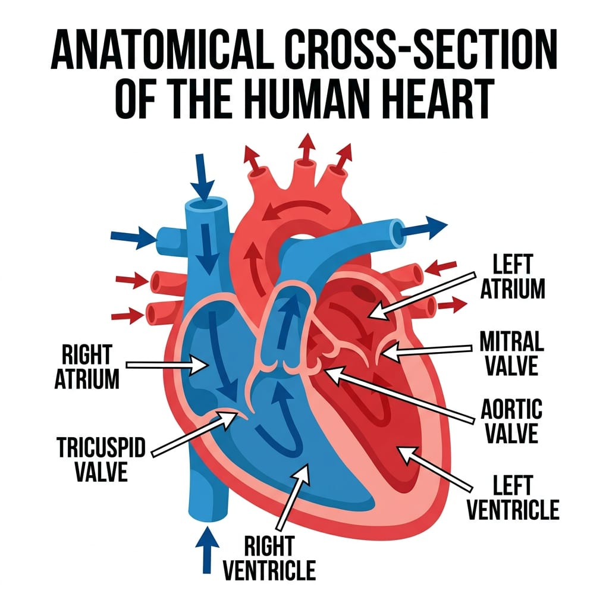
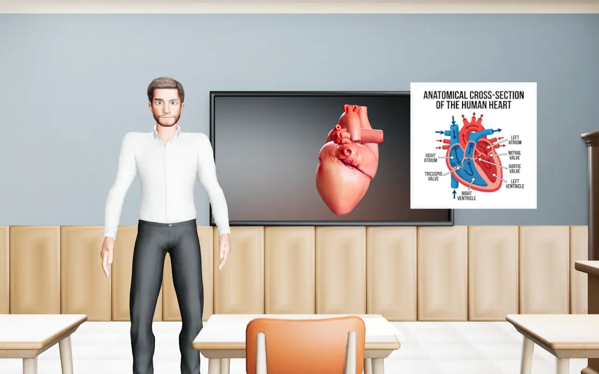

A Diagram Made for the Lesson
It goes up on the board, in step with the words.
Grades 6 to 8
Your own AI teacher explains the topic you pick out loud, shows it on the board, then checks that it stuck.

Real output from the heart demo lesson.
Pick a topic and your teacher builds the whole lesson for it. These pieces are all from one lesson on the heart.

It goes up on the board, in step with the words.
When a topic has a shape, it stands in the room.
If one of the heart's one-way valves gets damaged...
Each concept comes back just before you would forget it.